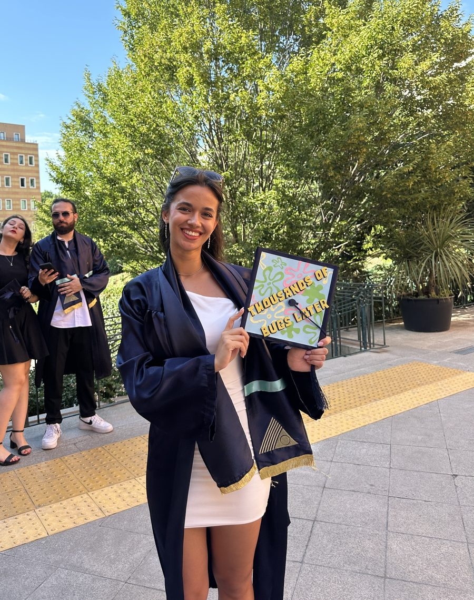

Hi, I'm
Elif Dikmen
Data Scientist & ML Engineer, in progress
I'm a Computer Science graduate with a growing love for machine learning — turning messy data into models that actually predict something real. I'm currently pursuing an Online Master of Science in Analytics (OMSA) at Georgia Tech, specializing in Data Science, and I recently completed a research internship at the University of Bologna, where I built an LLM-powered tool auditing how AI apps handle data privacy.

Right now
A quick introduction
Three things that sum up where I am and what I'm chasing next.
Currently studying
OMSA @ Georgia Tech
An Online Master of Science in Analytics, specializing in Data Science — going deeper into the statistics and machine learning behind every model I build.
More about my path →What I love
Machine Learning
I love machine learning — the process of teaching a model to find the signal in the noise. It's the thread running through every project on this site.
See it in action →Recently completed
Research Internship — University of Bologna
A research internship on data privacy: I built an end-to-end pipeline and an LLM-powered chatbot that audits what GPT Actions actually collect, plus a suite of interactive dashboards to explore the results.
Read the full story →Want the full story?
From my Computer Science degree, to Bologna, to Georgia Tech — here's how it all connects. Or skip ahead to see what I've actually built.